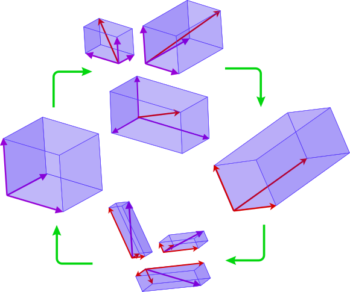
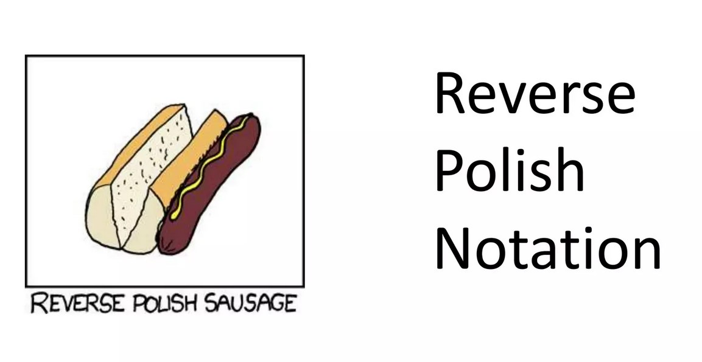
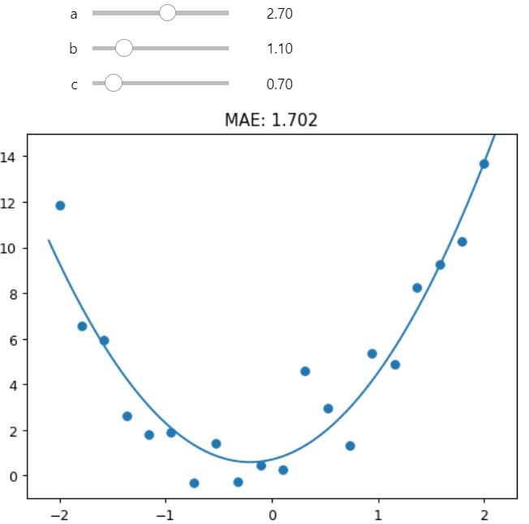
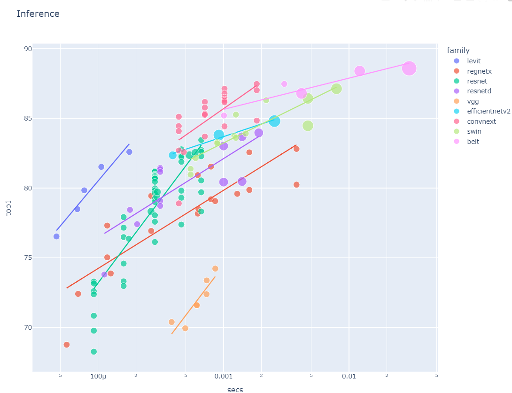
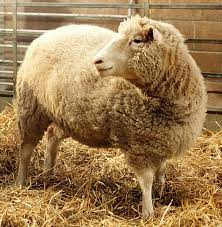

Tony’s blog
about
leetcode
notes
blog
Categories
All
(20)
app
(3)
basics
(3)
classifier
(2)
hello world
(2)
kaggle
(1)
leetcode
(3)
linear algebra
(1)
quarto test
(4)
spreadsheet
(1)
tutorial
(2)

LA notes: Change of Basis
linear algebra
An interpretation of change of basis
Feb 9, 2024
Tony Phung

LC 150. Evaluate Reverse Polish Notation (attempt 1)
leetcode
Implement a Stack using Postfix Notation
Feb 7, 2024
Tony Phung
LC 155. Min Stack (attempt 1)
leetcode
An introduction to .append(), .pop() and .min() list functions and creating them as method as part of a class
Feb 6, 2024
Tony Phung
❄️LeetCode Posts❄️
leetcode
hello world
A page to archive my (naively hopeful daily) leetcode attempts.
Feb 6, 2024
Tony Phung
Neural Networks in a Spreadsheet (Attempt 1)
spreadsheet
A failed attempt to apply neural network concepts in a spreadsheet
Feb 4, 2024
Tony Phung

Neural Network Basics (Part 3)
basics
Creating the ReLU Function
Feb 3, 2024
Tony Phung
Neural Network Basics (Part 2)
basics
Optimising with Gradient Descent
Feb 2, 2024
Tony Phung
Neural Network Basics (Part 1)
basics
Manually fitting a Line (Quadratic Function) to a dataset
Jan 31, 2024
Tony Phung
How To Setup a Kaggle API
kaggle
Continuing my Data Science journey with Kaggle
Jan 27, 2024
Tony Phung
How to Build and Deploy a Deep-Learning Multi-Classifier Web App (Part 3)
app
Host a neural network app live on
HuggingFace
Jan 25, 2024
Tony Phung
How to Build and Deploy a Deep-Learning Multi-Classifier Web App (Part 2)
app
Create a local neural network
Gradio App
Jan 25, 2024
Tony Phung
How to Build and Deploy a Deep-Learning Multi-Classifier Web App (Part 1)
classifier
Create a
simple neural network
model
Jan 24, 2024
Tony Phung

How to choose a different Deep-Learning Model Architecture
tutorial
Today I’ll go through how to find and test different deep-learning architectures from
Pytorch Image Models
(timm) library made available here by Ross Wightman and use them…
Jan 23, 2024
Tony Phung
Deploying My First Live App & it’s a Neural Network!
app
Embedding a classic Convolutional Neural Network (CNN) Gradio ‘Cat versus Dog’ classifier Gradio App, hosted on HuggingFace Spaces, into my Quarto Blog. What a mouthful!
Jan 19, 2024
Tony Phung
Saving a Fast AI Model
tutorial
This is a short tutorial to save (export) down a fast ai model (pkl file).
Jan 19, 2024
Tony Phung
Image Classifier 1: Noodles vs Rice
classifier
Today I’ll be attempting to build my first deep learning image classifier to distinguish between rice and noodles using knowledge gained from Jeremy Howards Fast AI course
Jan 18, 2024
Tony Phung

Post With Git Clone
quarto test
Learning how git work and
this is a post initiated by cloning existing repo.
Jan 16, 2024
Tony Phung
Post With Sample Jupyter Notebook
quarto test
Learning how quarto works with jupyter notebooks. This is a sample editted notebook from fastai.
Jan 16, 2024
Tony Phung
Post Without Code
quarto test
Learning how to quarto blog.
Jan 16, 2024
Tony Phung
Welcome To My Blog
quarto test
hello world
This is the first post in a Quarto blog. Welcome!
Jan 16, 2024
Tony Phung
No matching items